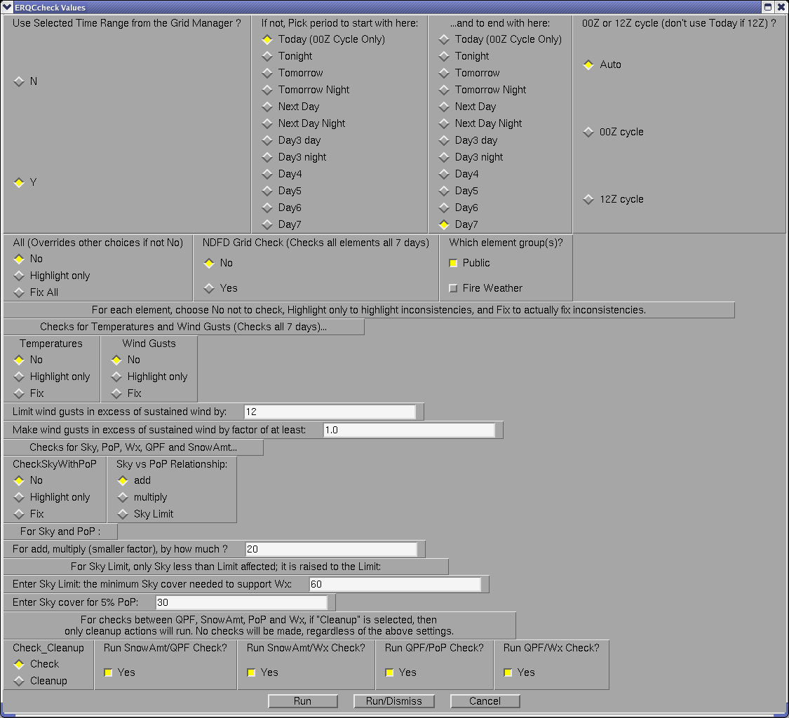

ERQCcheck
Introduction
Due to the increasing number of elements
and their forecast projection which must be produced, it has been difficult to keep track of all the
data in all the grids. There is a need for methods to assist in the managing of these grids in a
timely fashion.
One of the many challenges forecasters have is making sure all the grids are consistent with one
another (i.e. Td < T). With all of the different elements and their interrelationships, if the
data is not inspected carefully, glaring inconsistencies may show up. Another challenge is making
sure all grids required for NDFD are actually there, especially in the morning when the new day 7
needs added.
ERQCCheck is designed to assist in these areas. It allows one to cross check elements against one
another to assure consistency. Where inconsistencies are found, the forecaster has the option to
either just see where the inconsistencies are, or have one element or the other forced so that they
are consistent.
It also includes a routine that check for the existence of grids required for NDFD. This routine
checks for the various weather elements required for the time intervals required, over the seven days.
It accounts for the different time intervals required for the different elements, or for the same
elements over different time ranges. For example, many elements are required at three hour
intervals out to 48 or 60 hours, then every six hours out through day 7.
The following table lists the Procedures and Tools used, and which elements the Tools check.
The first column lists all the Procedures and Tools. In addition to the master Procedure,
ERQCCheck, there are 2 Procedures within the Master Procedure, one being
CheckTandTd Procedure, which also deals with MaxT and MinT, the other being the NDFDgridCheck
procedure.
The tools are used directly by the master Procedure for all the other elements; each Procedure or
Tool used by the master Procedure is indented once. Procedures are so indicated in the second
column; all others are Smart Tools. The weather element edited by the Smart Tool is listed in the
third column.
| Procedure or Tool |
Procedure |
Tool (Wx Element Edited) |
| NDFDgridCheck |
Procedure |
|
| CheckTandTd |
Procedure |
T and Td |
| SnowAmtQPFPoPWxCheck |
Procedure |
|
| CheckWindGust |
Procedure |
Wind Gust |
| CheckSkyWithPoP |
|
Sky |
| EnufCloudForPoP |
|
Cloud |
| WindChillTool |
|
Wind |
How
the Procedure Works
From the consistency menu, choose
ERQCcheck. Note that we are checking for internal inconsistencies, those found among one’s own
forecast grids, not inconsistencies between one’s own forecast and their neighbors forecast grids.
After selecting the procedure a GUI will appear:

The top section deals with selecting a
time range over which to check grids. To check grids over the selected time range in the grid
manager, just leave “Y” for “Use Selected Time Range from the Grid Manager.” To check for certain
periods, like Day4 or Day3 night to Day7, select “N” for “Use Selected Time range” and choose the
time periods at the right; the time to start with from the left column, and to end with from the
right. To check for Day4 only, for example, just choose Day4 for the start and end time.
If checking all the grids through time, simply pick the first period in the left column (Today
or Tonight) and Day 7 from the right column.
The column to the right allows one to choose which cycle one is on. This affects the time periods
chosen, as the day references change meaning from the 00Z to the 12Z cycle. Leaving the default,
“Auto,” will result in the cycle being automatically determined by ERQCcheck, so one need not worry
about this feature at all in most cases. However, the other two choices, one for each off the two
possible cycles one is on, are left available in case the Procedure doesn’t determine the desired
cycle right, such as during a borderline part of the day.
Next are the options for what to check, and whether to highlight only or actually fix. For each
weather element, one can choose whether to fix or just highlight where it is inconsistent with the
element it is being checked against. On the Wx check, just the highlight option is available,
although a fix option has been written, and will soon be added. On the WindGust check, just the
fix option is available at this time. The following table shows what elements can be checked
(Dependent Element), what element(s) they are checked against (Independent Element), and outlines
the options are available for each element.
| Dependent Element |
Independent Element |
Highlight |
Fix |
| MinT |
Previous MinT |
Yes |
Yes |
| MaxT |
Previous MaxT |
Yes |
Yes |
| T |
MaxT, MinT |
Yes |
Yes |
| Td |
T |
Yes |
Yes |
| RH, Heat Index |
T, Td |
Yes |
Yes |
| WindGust |
Wind, WindGust rules |
No |
Yes |
| Sky |
PoP |
Yes |
Yes |
| PoP |
Sky |
Yes |
Yes |
| PoP |
Wx |
Yes |
Yes |
| Wx |
PoP, PoP12hr |
Yes |
No |
| PoP12hr |
PoP |
Yes |
Yes |
| QPF |
PoP |
Yes |
Yes |
| SnowAmt |
PoP |
Yes |
Yes |
Note that leaving the defaults will
result in no action being taken by the Procedure at all. One must either pick an All option,
or one or more of the options that follow.
Brief Synopsis of each option: What
ERQCcheck does
What follows is an explanation of the
procedure and/or tool(s) behind each option and what they do. For the highlight option, temporary
grids are created and displayed at the bottom of the grid manager (but above the ISC grids, if
loaded). The grid name is the Element name prefixed with “Invalid,” Invalid[Element], such as
InvalidPoP. For the temperature checks, the grid names are something to the effect:
TgreaterThanMaxT.
Usually, the highlight grids will be purple over areas that are OK, and red over areas where the
value for that element is not consistent with the element it was checked against. A grid of
zeroes and ones is produced. The purple area will have a value of 0, indicating OK, and the red
area a value of 1, indicating an inconsistency, but not by how much.
Only the ISC_Send area is checked, so the forecaster is not bothered with the many inconsistencies
that may show up well outside the forecast area. In general, areas highlighted in red are areas
that “would have” been fixed if the fixed option were chosen.
All (overrides other choices if not No)
This first option is a quick way to have all the weather elements this Procedure can check or fix,
checked or fixed at once. If left No, the procedure will check or fix weather elements according
to the options selected below.
Checking Highlight only will run all the available checks, and produce the highlight grids
for those grids containing inconsistencies. The Fix All option fixes those grids which are
found inconsistent: they force grid values in line with values being compared against.
NDFD Grid Check is the routine that checks for the existence of all grids required for the
NDFD. It checks for all seven days, regardless of the time range chosen. It doesn’t highlight or
“fill in” missing grids; rather, it lists the missing grids and the times for which they are
missing When finished, “-- Missing grids listed below !! --“ appears in the status bar in the
lower left portion of the GFE display. Just open up the message window by clicking on the up arrow
just to its left of the status bar to see which grids are missing for which times. If all grids are
present, a message, “-- All necessary grids found --” appears in the status bar instead.
Just to the right of the NDFD option is a place to check for public, fire or marine weather
elements (the marine option can be removed for inland offices). For the public elements, heat
index is checked for in the summer; wind chill in winter. NDFD requires snow amount grids 12
months a year over the CONUS. All other public weather elements are all year round.
CheckTandTd (All 7 days only)
The temperature checks are carried out for all 7 days, regardless of the time periods chosen.
MinT and MaxT grids are checked against one another in chronological order. Values in the first
MaxT grid are made to at least equal values in the previous MinT grid, i.e., the grid from the night
before. Likewise, values in the first MinT grid are made to at most equal values in the previous
MaxT grid, i.e., the grid from the day before. This assures all values in a given MinT grid end up
at or below all values in both adjacent MaxT grids, and all values in a given MaxT grid end up at or
above all values in both adjacent MinT grids.
For the highlight only option, the actual error is shown in the red area in the temporary
Invalid[Element] grid. So, if MaxT is too low compared to the following MinT grid, negative
values will appear showing how much too low the grid is at each point.
Values in T grids are then forced to at least equal values in corresponding MinT grids, and/or at
most equal all values in corresponding MaxT grids. For the highlight option, values shown in red
in the temporary grid show where T is above the corresponding MaxT or below the corresponding MinT.
The purple area is where T is OK.
Td
This is done automatically with the CheckTandTd option. After forcing T within MinT and MaxT, Td is
forced to at most equal T.
For the highlight option, values shown in red in the temporary grid show where Td is above T.
RH, Heat Index (For Fix Option Only)
Since T and Td values are potentially changed, the RH, Wind Chill and Heat Index are all
automatically recomputed with the CheckTandTd option, the latter two only if loaded in GFE at the
time, a quick way to do only what is “in season.”
WindGust (Fix only)
This check forces wind gust values to be no lower than the sustained wind speed, as required.
There is an option to limit wind gusts in relation to the sustained wind speed. This is to avoid
wording like “5 to 10 mph with gusts to 40 mph.” It is defaulted to 12 kts, and can be changed.
Any wind gust values that exceed the sustained wind speed by more than this value are reduced so
that they exceed the wind gust by exactly this value. In this way, if the user chooses 10,
10G35KT becomes 10G20KT, in theory. In actuality, it may still come out something like 10G25KT,
on account of the analysis methods in the ZPF text formatter. Wind speeds are averaged while the
maximum is taken for wind gusts.
CheckSkyWithPoP
Although there is no quantitative relationship between PoP and Sky, generally there is a qualitative
relationship that high PoPs require high Sky values, although high Sky values do not necessarily
mean the PoPs have to be high. This option checks Sky against PoP, allowing the forecaster to
choose from three possible Sky-PoP relationships, then control the relationship chosen, according
to the meteorological situation at hand. These relationship options appear just to the right of
CheckSkyWithPoP; the “For Sky and PoP” section, allowing one to control the relationship chosen,
appears just below the CheckSkyWithPoP option.
The first two relationships are based on the premise that the Sky should be at least equal to, if
not greater than, the PoP. In essence, if there’s a 50% chance of rain, then it should be at least
partly cloudy, if not mostly cloudy. It certainly shouldn’t be mostly clear if there’s that good a
chance for rain. On the other hand, if there are a lot of clouds, there may not be much
precipitation around. This is OK; the tool leaves these areas alone.
Relationship 1: Sky greater than PoP by a fixed amount. For this option, one chooses “add”
under “Sky vs PoP Relationship.” In the “For Sky and PoP” options below, one chooses the amount by
which the Sky should be greater than the PoP; the default is 20.
For the fix option, all Sky values not exceeding the PoP by at least the amount entered will be
increased just enough to do so. Sky values already exceeding the PoP by more than the amount
entered are simply left alone. For the highlight option, areas that “would have” been fixed are
simply highlighted with ones in a grid of ones (red) and zeros (purple).
Relationship 2: Sky greater than PoP by a factor. For this option, one chooses “multiply”
under “Sky vs PoP Relationship:” In the “For Sky and PoP” options below, one chooses the factor by
which the Sky should be greater than the PoP. The default of 20 should almost definitely be
changed, usually to a much lower value, such as 1.5 or 2.
For the fix option, all Sky values not exceeding the PoP by at least the factor entered will be
increased just enough to do so. For example, if the factor entered is two, then the Sky values
should always be at least double what the PoP is; those values that aren’t are increased to exactly
double the PoP. Sky values already exceeding the PoP by more than the factor entered are simply
left alone. For the highlight option, areas that “would have” been fixed are simply highlighted
with ones in a grid of ones (red) and zeros (purple).
Relationship 3: Sky is at least a certain value (or lower limit) wherever there is weather.
For this option, one chooses “Sky limit” under “Sky vs PoP Relationship.” In the “For Sky and PoP”
options below, one decides 1) how much Sky cover there should be to support weather, and 2) how
much Sky cover there should be to support a 5% PoP. For the former, weather is required for PoP
values of 15 or greater; this is hard-coded. Here, one is really entering how much Sky cover there
should be to support a 5% PoP, and a 15% PoP, with values in between linearly interpolated.
We are only concerned here with Sky values for the onset of weather: PoP values of between 5%
(onset of possible trace events) and 15% (onset of measurable precipitation). The idea here is that
the Sky limit entered should be the lowest Sky value found anywhere the PoP is 15% or greater.
Note here that higher PoP values do not affect the algorithm: if 60 is left for Sky Limit, then all
values lower than 60 should be raised to 60 for PoPs anywhere from 15% to 100%. Sky cover for PoPs
of 5% to 15% should vary linearly from the values entered for a 5% PoP to the value entered for a
15% PoP. Sky values for PoP of less than 5% are left alone.
For the fix option, the Sky is raised to that value entered for PoP needed to support measurable
precipitation wherever the PoP is 15% or greater, the definition for a forecast of measurable
precipitation. Sky is raised to that value entered for 5% PoP where the PoP is 5%, and left alone
regardless of its original value where the Pop is less than 5%. For PoP values between 5% and 15%,
a slope is created to determine the new minimum Sky in this range, varying linearly from the Sky
value entered for 5% PoP and that entered to support measurable precipitation.
For the highlight option, a grid of zeroes (purple) and ones (red) are shown, the ones indicating
where the Sky grid is inconsistent with the PoP grid, areas that “would have” been fixed using the
“Fix” option.
SnowAmtQPFPoPWxCheck
Performs two, simple consistency checks on the SnowAmt grid:
- Where SnowAmt >= 0.5 inches, checks to ensure QPF >= 0.01 inches.
- Where SnowAmt >= 0.1 inches, checks to ensure Wx contains S, SW, and/or IP. The frozen
precipitation type can be mixed with any liquid and/or freezing precipitation type. The procedure
does not consider coverage, intensity, and/or visibility of the frozen precipitation in the Wx
grid. There are two cases, which are subtly different:
- If the SnowAmt grid is 6-hr long and starts at 00, 06, 12, or 18 UTC, then at least
one of the overlapping Wx grids must contain S, SW, and/or IP.
- All other SnowAmt grids will have to have all overlapping Wx grids contain S, SW,
and/or IP. The more stringent check is required because if the GFE grid time constraints are
offset from the NDFD time constraints, it is possible for the GFE to return a consistent
result but have the NDFD believe the grids are inconsistent.
The procedure also performs two, simple consistency checks on the QPF grid:
- Where QPF > 0.0, checks to ensure at least one of the overlapping PoP grids is greater
than zero. The PoP grids here are the “floating” PoP grids.
- Where QPF > 0.0, checks to ensure that the overlapping Wx grids have at least one of
the precipitating Wx types, which includes L and ZL. The check is made against the Wx type
only. The procedure does not consider coverage, intensity, and/or visibility of the
precipitating Wx type. There are two cases, which are subtly different:
- If the QPF grid is 6-hr long and starts at 00, 06, 12, or 18 UTC, then at least
one of the overlapping Wx grids must contain precipitating weather.
- All other QPF grids will have to have all overlapping Wx grids contain precipitating
weather. The reasons for the more stringent test are the same as with the SnowAmt/Wx
consistency check.
Notes:
- In case it's not clear, for both the SnowAmt/Wx and QPF/Wx checks, if you have a mixture
of SnowAmt/QPF grids where some meet the 6-hr definition and some do not, then the “any” Wx grid
check applies for the 6-hr grids and the “all” Wx grid check applies to the others.
- For all checks, if the initial threshold is not met, then the grids are considered
consistent by definition. In other words:
- If SnowAmt < 0.5 inches, then SnowAmt and QPF are always consistent.
- If SnowAmt < 0.1 inches, then SnowAmt and Wx are always consistent.
- If QPF = 0, then QPF and PoP are always consistent.
- If QPF = 0, then QPF and Wx are always consistent.
If the procedure finds any inconsistencies, it will highlight the inconsistent grids and create
temporary grids which show where the inconsistencies occur. The values in all the temporary grids
are either zero (consistent) or one (inconsistent). The procedure does not modify any grids.
It's left up to the forecaster to determine how, if at all, to handle the inconsistencies.
The issue of a check only versus a check/force procedure was discussed by the STSIT and the
consensus recommendation was a check only procedure. The STSIT feels strongly that there are
no meteorologically sound ways to force consistency of these grids.
When the procedure is run, the forecaster is presented with several choices. The first is whether
to run checks or to “Cleanup”. By default, the procedure will run checks. The “Cleanup” option
will undo any highlighting and remove any temporary grids. If you leave “Check” selected, then
you can choose which of the checks you wish to run by toggling on and off the appropriate button.
By default, all checks will be run.